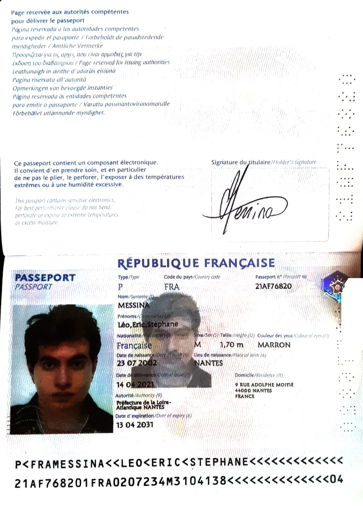

Une expérience à déconseiller
Léo (né en 2002, résident à Nantes) a navigué avec moi sur mon bateau FSM de Agadir, Maroc, à Dakar, Sénégal, du 25/9 au 21/10/2024, dans le cadre d'une navigation transatlantique. Il n'a systématiquement pas écouté les avis, soit techniques, soit de sécurité, soit de simple cohabitation (hygiène etc.). Bien qu'il avait déclaré avoir "acquis une certaine expérience en voile grâce à plusieurs stage effectué sur l'archipel des Glénan", malgré sa déclaré formation comme ingénieur en géologie, et après 4 semaines de navigation intensive, il ne comprenais pas même les éléments plus basiques de la navigation. Il a endommagé plusieurs équipements de bord, sans prévoir une compensation ni réparation. Et finalement, contrairement aux accords, il a refusé de donner la partie de la caisse de bord qu'il avait promis. Sur mon bateau j'ai eu plus de 70 équipiers, et j'ai navigué avec plus 200 personnes. Les 4 semaines avec Léo ont étés les plus désagréables de toute ma carrière de navigateur, et Léo est le seul que j'ai du débarquer. Je peux donc en toute sérénité déconseiller Léo pas seulement comme équipier, mais pour toutes activités, de loisir comme professionnelles.
Je suis disponible pour plus de détails.
- © Paolo Cavallini
- Design: HTML5 UP